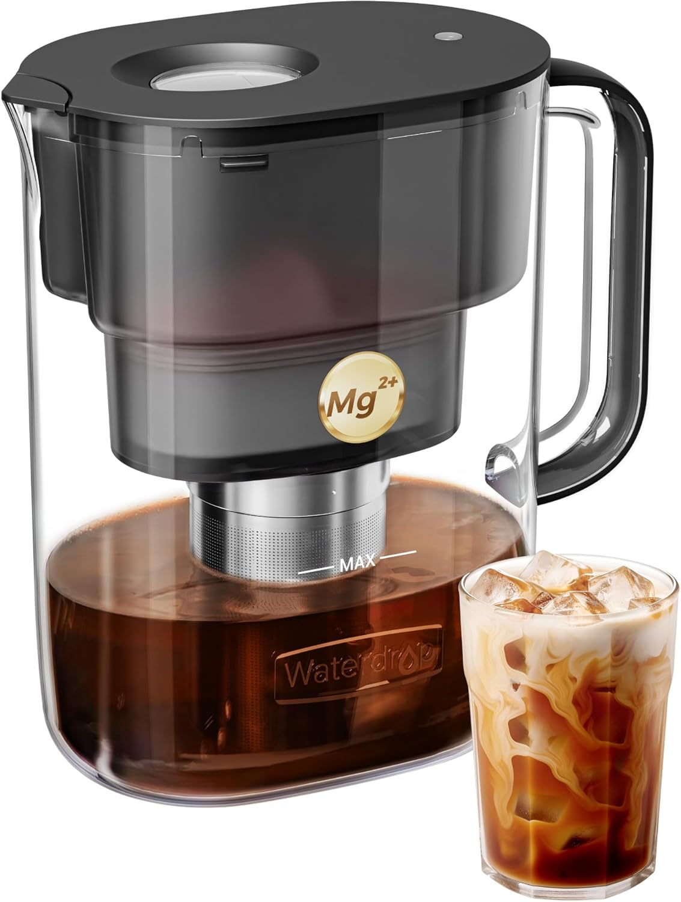

They're closing one chapter. Give them something for the next one — not a reminder of the last.
The Insight: Two big mistakes: (1) "old guy" joke gifts like "Finally Free!" plaques — some find them condescending. (2) Gifts tied to their old job — retirees want to look forward, not back. The best retirement gifts open doors to their next chapter: quality hobby equipment, leisure gear, and premium tools for passions they now have time for.

Never scramble for a last-minute gift again.